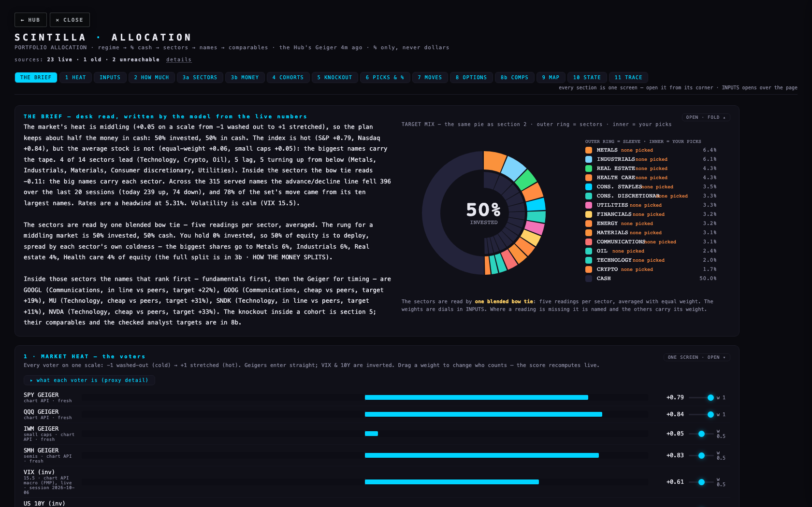
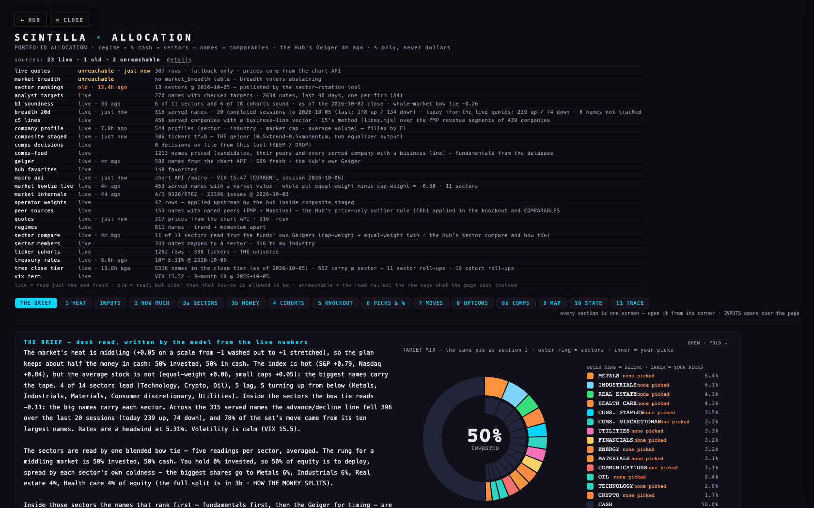
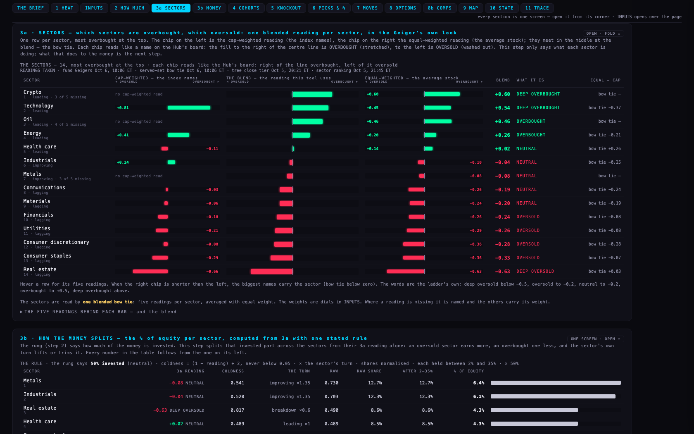
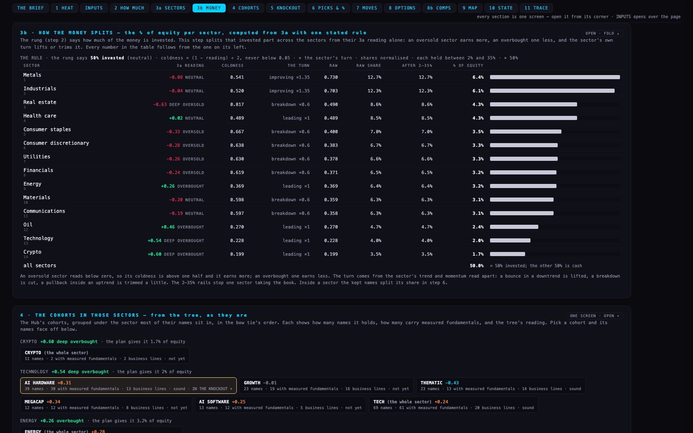
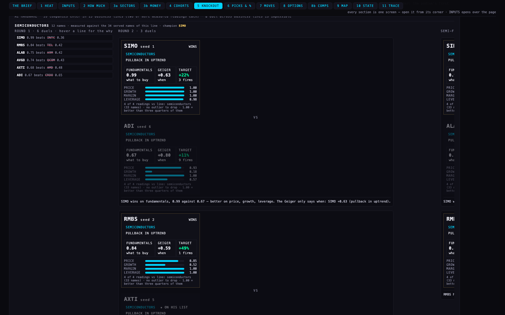
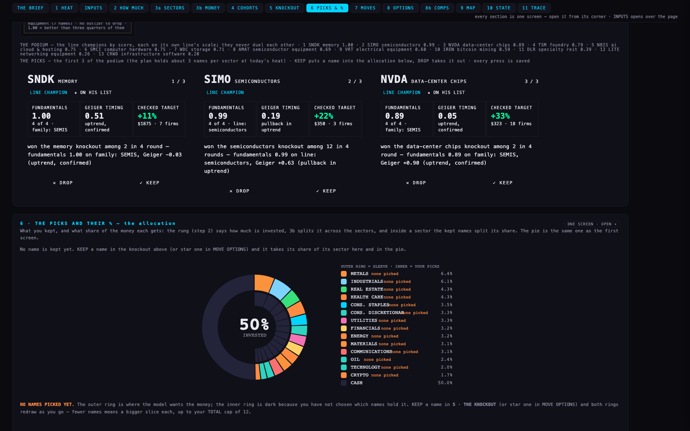
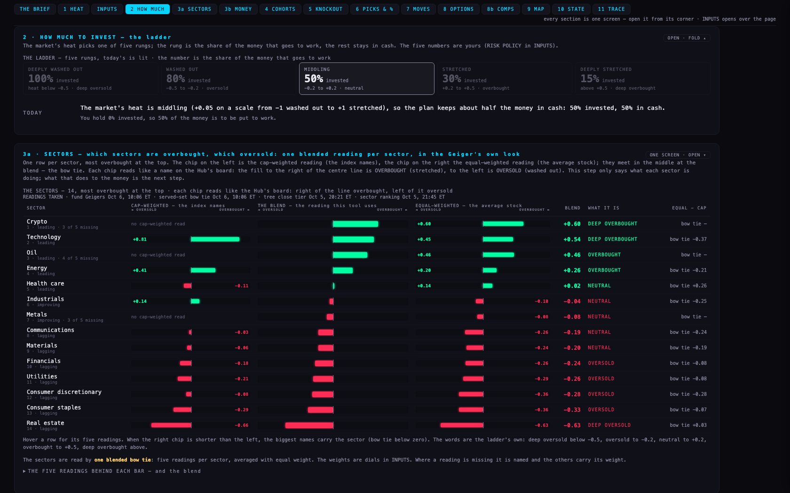
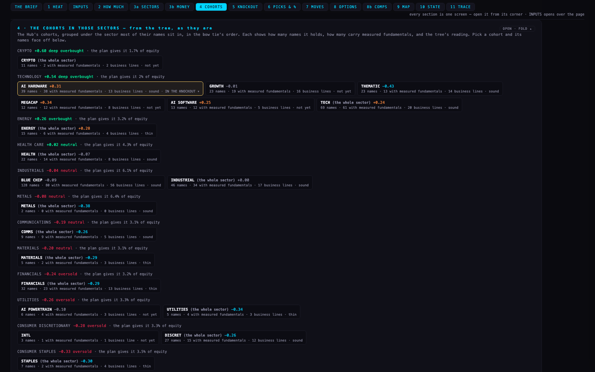
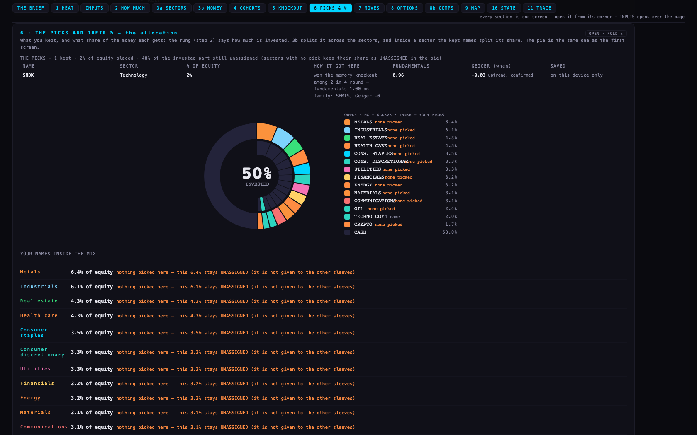

PA6 · the allocation, top to bottom, one step at a time6 Oct 2026 · allocation repo branch pa6-20261006 on top of PA5 (main @4fa648e) and C6b (@682d7fb) · the knockout's concept and this report on the Hub branch hub/pa6-report-20261006 · not deployed — the coordinator fast-forwards main
Alan, 6 Oct: "when you go into allocation you get stuck. You can't get back." "I don't know what these yellow, orange and green buttons are for." "Keep it separate: the identifying of which sectors are overbought and oversold first, then the allocation of the percentage of equity." "I'm not sure that you determined the logic for these knockouts yet … the concept, then the detail like the football field." "There's a lot of filler and old stuff." Each of those is one item below, each its own commit, in that order.
1 · A way back — the Hub's pair on the allocation page (commit f36b0d2, first, so it can ship alone)
The Hub's own ← BACK / ✕ CLOSE snippet, with the same look, sits above the title. This tool lives on its own address (allocation.scintillahub.ai), so BACK is spelled HUB: it goes back when the Hub sent you here, else to the Hub's front door; CLOSE closes the tab the Hub opened, and when the browser will not close a tab it goes to the Hub too. Nothing is stored and nothing is requested. Tested headless: both buttons visible at the Hub's size, above the title, covering nothing; a click lands on the Hub's address.

2 · The source badges became one quiet line (commit 69afcad)
The yellow, orange and green buttons were one badge per source, each saying LIVE, STALE or FALLBACK with an age. Now one sentence: sources: 23 live · 1 old · 2 unreachable — details, and "details" opens the list (name · state · what it is). LIVE = read just now and fresh; OLD = read, but older than that source is allowed to be; UNREACHABLE = the read failed and the row says what the page uses instead. Tonight the old one is the sector ranking (published 21:45 ET on 5 Oct, allowed three hours) and the unreachable two are the VIX term table (it never reaches today's close before the evening) and the breadth table that does not exist. The explanation is in PAGE SPECS on the page.

3 · Step 3 split in two (commit 69afcad)


3a SECTORS says what each sector is doing and nothing else. One row per sector, most overbought at the top. The chip on the left is the cap-weighted reading (the index names), the chip on the right the equal-weighted reading (the average stock); they meet in the middle at the blend — Alan's bow tie, but each half drawn as the Hub's own Geiger chip (the CSS copied from the Hub's board: the centre line at zero, the fill to the right when positive, green; to the left when negative, red). The word beside the number is the ladder's own rung: DEEP OVERSOLD below −0.5, OVERSOLD to −0.2, NEUTRAL to +0.2, OVERBOUGHT to +0.5, DEEP OVERBOUGHT above. The five readings behind each blend are one click below, unchanged from PA5.
3b HOW THE MONEY SPLITS takes the 3a readings and nothing else. The rule is PA5's, now written down and shown column by column: coldness = (1 − reading) ÷ 2, never below 0.05; × the sector's turn (improving ×1.35, pullback inside an uptrend ×0.85, breakdown ×0.6, leading ×1); the raw numbers normalised to 100% of the invested part; each sector held between 2% and 35%; × the rung's % invested. Tonight: 50% invested, Metals 6.4% and Industrials 6.1% of equity at the top (neutral and turning up), Technology 2.0% and Crypto 1.7% at the bottom (deep overbought). The last column is the one the pie and the picks use; the sectors add up to the rung, to the tenth of a percent, by test.
4 · The knockout — concept first, then the build (commits 5ebe1f0 on the Hub, 62fbc29 here)
The concept is its own page on the Hub: KNOCKOUT-CONCEPT.html — five lines, then the detail, then three duels on tonight's AI HARDWARE names worked through football-field style with every number. The build follows it and nothing else. In five lines:
- Who may face whom. Only two companies in the same business line (C5's lines: what each company actually sells, from FMP's revenue by segment; Micron and Sandisk are memory, Nvidia and Marvell are data-center chips, Lam and Applied are semiconductor equipment). RMBS vs LRCX, ADI vs ASML, SIMO vs IREN cannot happen — by rule and by test.
- How a duel is scored. Four fundamentals — price (P/E, or P/S for a loss-maker), revenue growth, net margin, leverage — each on its own scale against the line's field (the family when the line has fewer than five measured names), a peer priced strangely left out first (C6b). A duel is won on fundamentals; only when two names are within 0.02 does the Geiger decide the timing.
- Seeds. By the fundamentals score inside the line; fewer than two measured readings sits out and is named.
- Rounds. First plays last, an odd name gets a bye, until one is left — the line's champion; a lone name is champion unopposed and says so.
- What a win means. "Inside its own business, the stronger fundamentals tonight." Champions never duel each other: they stand on a podium by score, and the podium's first names are the KEEP / DROP picks.


Tonight's AI HARDWARE cohort: 39 companies in thirteen business lines (the four funds sit out). Semiconductors has twelve names and four rounds (SIMO wins; ALAB beat AVGO on timing, the one even duel); ai cloud & hosting five (NBIS); semiconductor equipment four (AMAT over ASML in the final — the concept page's snapshot an hour earlier had LRCX, see "what could be wrong"); memory two (SNDK over MU, even on fundamentals at 1.00 each, so the Geiger decided: SNDK reads −0.03 against MU +0.40); foundry, infrastructure software and networking equipment one each — TSM, CRWD, LITE, unopposed and marked so. The podium: SNDK 1.00 · SIMO 0.99 · NVDA 0.89 · TSM 0.79 · NBIS 0.75 · SMCI 0.75 · WDC 0.71 · AMAT 0.69 · VRT 0.60 · IREN 0.59 · DLR 0.39 · LITE 0.26 · CRWD 0.20. The plan holds about three names per sector at today's heat, so the first three are the pick cards.
How it is built. C5's method is not copied: the Hub's lines.mjs is imported as it is through a rewrite on this site, with the revenue segments C5 pulled on Fly; every served company gets a line vector, and the fundamentals of every served company are loaded so each line has its field. One hand rule was added here and is cited: FMP files AMAT, LRCX, KLAC and ASML under "Semiconductors"; their 10-Ks are wafer-fab equipment. Should the Hub be unreachable, the lines fall back to the industry axis and the sources line says so.
5 · What left the page — the filler list (commit 3924fb5)
Every item below was on the page or in its code and no step of the chain used it. Nothing was lost: the history prose moved word for word to HISTORY.md in the repository, and everything else is in git.
- the Yahoo-era feed state: COHORT, MACRO, STAMPS (never filled since 11 Aug 2026)
- parseCSV (the Yahoo CSV parser)
- EQ_W / TFS — the July client-side equalizer curve (the Geiger comes from the chart API now)
- ingest (fed the Yahoo CSVs into COHORT / MACRO)
- geiger(c) — the client-side Geiger from Yahoo primitives
- rowGeiger — the macro-feed row Geiger
- internalsScore — never called
- INTERNALS — the macro-feed internals table (only the dead breakdown read it)
- the INTERNALS breakdown table in render() (its element never existed on the page)
- the moves' breadth factor read from the empty Yahoo COHORT (never fired)
- GEIGER DIALS: Trend/Momentum and RSI/W%R dials and the TIMEFRAME WEIGHTS note (dials of the client-side Geiger, which no longer runs; the VIX and 10Y ends stay)
- INPUT MAP row "Trend/Momentum · RSI/W%R" (the dead dials)
- drawMix — the old LC/SC/cash mix canvas, never called
- heatCurve — never called
- rvolTxt — never called
- sectorRead — never called
- sectorReadOf — never called
- intentFit — never called
- sleeveShares_OLD — the July sleeve engine (GROWTH/SMALL/BROAD/SEMIS/CRYPTO/CMDTY), superseded
- tickerSleeves_OLD — the July sleeve membership, superseded
- styleAdj — never called
- sleeveG — only the removed sleeve rows read it
- CATS — the July category list (the tabs are built from the live groups)
- CLASSNAME — never read
- MIX_OPTS — the method dial's option list (the dial went in PA5)
- SECTOR_ETF — a second sector→fund map, never read
- SECTOR_ETF_OF — a third sector→fund map, never read (SECT_CW is the one used)
- COHORT_SLEEVE — cohort→July-sleeve map (only the _OLD function read it)
- step 6: SECTOR ROTATION — leaders, heatmap, quadrants, rotation map and regime read (a second sector table; 3a is the sector reading)
- step 6: the ROTATION TEMPLATE (a third sector table; its implied-price arithmetic stays for the COMPARABLES sheet)
- step 6: the TARGETS block — INVESTED, one row per sector with its Geiger and share, BIG vs SMALL (3b is the money split; the rung is in step 2)
- step 6: THE CURVE + split math — the July heat→% curve canvas and the LC/SC split sentence (step 2's ladder is the rule)
- STATE & ROADMAP: the July–August history (data policy, the C7 consolidation, the 11 Aug analytics session, the proxy menu, the equalizer parity tests, the RSI levels, the IBKR note, the v11 architecture, the style layer, the agreed base, the 23 Jul ecosystem direction P1–P5, "awaiting Alan's go") and the PA3 / PA4 paragraphs — moved word for word to HISTORY.md
- candidateSyms: the fallback universe read from the Yahoo COHORT (always empty)
Kept, though old, because a step still reads it (decisions for Alan below): the BIG vs SMALL lens (the Russell-against-S&P split and its heat tilt dial) still feeds THE MOVES, THE BRIEF's second paragraph and the AUDIT TRACE; the STYLE LAYER (growth / semis / value / crypto spreads) still feeds the moves' cadence; the Yahoo-era TICKER_STYLES and CLASSES maps are the fallback when the database universe fails; section 8 MOVE OPTIONS and 8b COMPARABLES are the original tool's flow and PA4's cards.
6 · Tests and pictures
| file | what it checks | tonight |
|---|---|---|
| pa6-scnav | the way back: the pair above the title, both buttons to the Hub, a click lands there | 1 of 1 pass |
| pa6-steps | the sources line (counts, the list, no badges); 3a in the Hub's chip, the words, nothing about money; 3b every column from the one before, adding up to the rung | 3 of 3 pass |
| pa6-knockout | C5's method live; every duel inside one line (both names ≥ 15 cents in it); seeds, first-plays-last, won on fundamentals, Geiger only when even; the line or family scale; the podium; a made-up cohort of RMBS, LRCX, ADI, ASML, SIMO, IREN, MU, SNDK, NVDA, MRVL — the named pairs never meet | 5 of 5 pass |
| pa5b (C6b) | the price-only outlier rule, unchanged | 5 of 5 pass |
| pa5 | the blend, the bow tie (assertions moved to the chip look), the chain's order (fifteen sections), the knockout (adapted to the line structure), KEEP writes | 7 of 8 — "the page loads with the blend live" asserts the sector ranking is LIVE; tonight it is OLD (last published 21:45 ET on 5 Oct; the sector tool did not publish overnight). Live data, not the page. |
| pa4 | breadth, concentration, VIX, the blend weights, the cards, the guidance file, the fold (fifteen sections) | 8 of 8 pass |
| pa3 | the wiring: Geiger, sectors, ladder, prices, targets, peers, B1, names, the brief, what may be stale | 11 of 11 pass (the test now waits for the names table — the page loads every served company's fundamentals — and its local stand-in passes the upstream content type so the C5 module imports) |
Run with node --test --test-concurrency=1 tests/ (one file at a time: each opens its own headless browser and every non-GET request is blocked and counted; the three PA6 files close their browser in a teardown so a failed assertion can never leave a process hanging). Total tonight: 45 of 46 pass; the one failure is PA5's "sector ranking is LIVE" on a night the sector tool did not publish (live data, not the page). Before PA6, PA5's suite stood at 34 of 34 on 5 Oct.
Pictures, all headless at 1680 × 1050, in shots/: the first screen, the sources list open, each step one screen (1 heat, 2 how much, 3a, 3b, 4 cohorts, 5 the knockout — first line, a line with rounds, the podium and picks — 6 picks and %), and every section folded and open (00 to 12). The concept page's own pictures are concept-01 to concept-06. The readout file holds the brief, the sources line, every sector's reading and word, the money split and the whole knockout as text. I opened and examined the first screen, 3a, 3b, the knockout line, the podium and the concept's Example A myself; what is described above is what is in them.



7 · What could be wrong, and what was not done
- The comps feed answers differently call to call tonight. Micron's revenue growth came back +146%, then −59%, then +146% again across three loads an hour apart; its P/S 20.0 then 8.1. The knockout reads whatever the feed answers when the page loads, so a line's champion can change between two loads (the concept page's snapshot had LRCX winning equipment and APLD winning ai cloud; the live page an hour later had AMAT and NBIS). Price, margin and leverage moved little; growth is the reading to trust least until the feed is steady. This is the feed, not the page; it needs the provider lane.
- Forward P/E is zero for every name in the feed, so the price reading is trailing P/E (or P/S for loss-makers) only.
- AXTI at 3,169× trailing earnings stays in the semiconductors field: C6b flags it on P/E alone and needs two of three price votes. The rule is the Hub's and was not changed ("no new rule without its neighbours"); the quartiles the duels use are robust to one extreme value.
- The sector ranking is old tonight (one PA5 test asserts it live): the sector tool last published at 21:45 ET on 5 Oct.
- Not done: the LC/SC lens, the style layer and the Yahoo-era fallback maps stay (a step still reads them — decision below); pictures at 390 wide were not taken (the brief asked for 1680 × 1050, one screen per step); the Hub's own tests were not run (this lane touched only a new folder under deliverables on the Hub).
8 · Decisions for Alan — three, each with a recommendation
- Ship the way back on its own? Commit f36b0d2 is the scnav pair alone. Recommendation: yes, today, before the rest is reviewed.
- A company whose revenue splits across lines — one line or every line? AMD (48% data-center chips, 52% other chips) plays in semiconductors tonight. Recommendation: one line, the biggest; a name should not win two championships in one cohort.
- Drop the BIG vs SMALL lens and the style layer too? They are July's; THE MOVES and THE BRIEF still read them. Recommendation: drop them in the next pass, once THE MOVES is rebuilt from 3b's split (a sector's % of equity, not a sleeve's) — doing it now would leave step 7 reading nothing.
PAGE SPECS
Where each number comes from. The Geiger and prices: the chart API through this site's rewrites. The sectors: the State Street fund and its Invesco equal-weight twin, the served-set bow tie, the tree's close tier, the sector ranking table — blended as PA5 states. The business lines: the Hub's C5 method (lines.mjs) over the FMP revenue segments (3 Oct) and the company profiles. Fundamentals: the database's comps feed. Peers and targets: peer_sources and the checked analyst notes (A4). Decisions: comps_decisions, the Hub's own path.
Branches. Allocation: pa6-20261006 (commits f36b0d2 scnav · 69afcad sources line + 3a/3b · 62fbc29 the knockout · 3924fb5 the filler). Hub: hub/pa6-report-20261006 (5ebe1f0 the concept · this report). Nothing deployed; the coordinator merges and fast-forwards main.